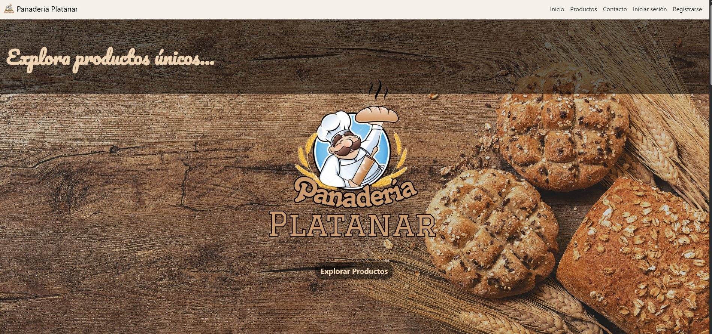
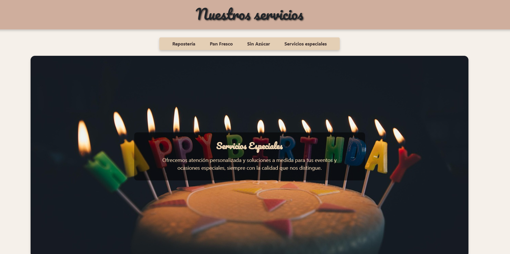
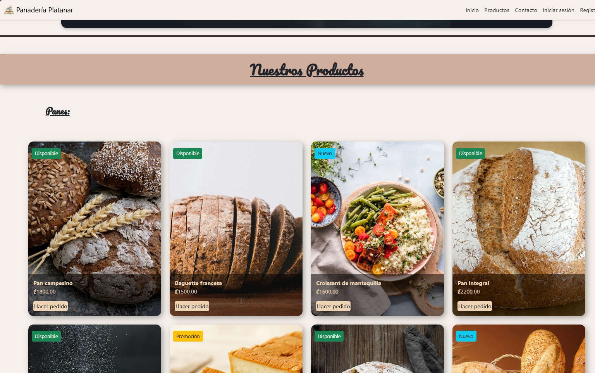

Panadería Platanar
My First Project
Panadería Platanar was my first complete web project. I developed it independently, which meant learning through experimentation, mistakes, and debugging. Along the way, I encountered challenges involving database design, SQL injection vulnerabilities, authentication, system architecture, and user interface design.

First Full-Stack Web Project
My first web application, developed independently without a tutor. This project challenged me to learn how to structure a complete website, from its visual design to its underlying functionality.
Although the project had many imperfections, it became an important foundation for my development as a programmer. It taught me not only how to build a system, but also why security, planning, and good architecture matter.

UI Design & System Architecture
I designed the application's interface and system structure from the ground up, learning through trial and error how different components of a web application work together.

Database & E-commerce Integration
I learned how to connect the application to a relational database and build dynamic product management, including categories, prices, stock, and orders.